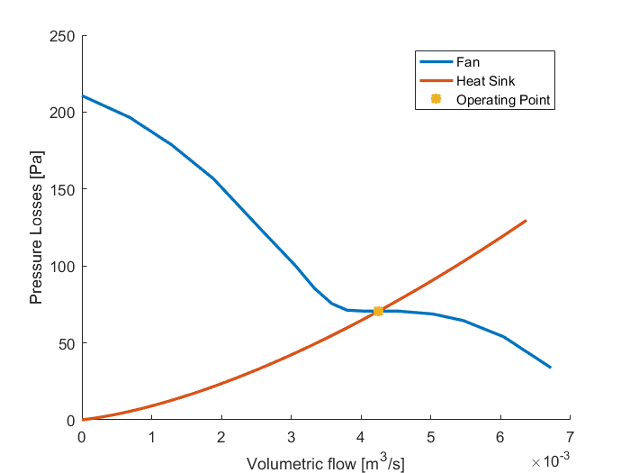

Heatsink with Fan Optimization
Problem description
In this example, we consider a surface of 0.05x0.1 m that needs to dissipate 75 W. In this case, we need to design the necessary heatsink
Problem implementation
First the surface is created, in this case the temperature of this surface must be kept below 100°C
mySurface = Comp3d.HeatingSurface('name','heatingSurface','power',75,'length',0.1,'width',0.05,'tMax',100);
The heatsink is then created by the assemby of the baseplate, fins and fan
myBasePlate = Comp3d.BasePlate('name','basePlate','level',2,'length',0.22,'width',0.12,'conductingMaterial',2); myFins = Comp3d.RectangularFins('name','fins','level',2,'length',0.22,'numberOfFins',30,... 'thickness',2e-3,'height',5e-2,'gapBetweenFins',2e-3,'conductingMaterial',2); myBlowingElement = Comp3d.FanDiscreteDC('name','fan','temperature',25, 'widhOutTube',0.11, 'heightOutTube',0.11, 'lengthTube',0.02,... 'thicknessFanTube',2e-3,'materialTube','Aluminium');
Then the composite is created, the elements are added to the heat sink and the parameters are computed
myHeatSink = Comp3d.HeatSink('name','heatSink'); myHeatSink.addElement(myBasePlate); myHeatSink.addElement(myFins); myHeatSink.addElement(myBlowingElement); myHeatSink.addElement(mySurface);
The heatsink is add to an optimization problem and the optimization process is launched. In this case, the sqp algorithm of Matlab will be used
myOptProblem = OptimProblem.Optimizer; myOptProblem.addComp3d(myHeatSink); myOptProblem.optimAlgoType = 'GradientDescent'; myOptProblem.optimAlgo.options.Algorithm = 'sqp';
The optimization is launched and the results are displayed and plotted
myOptProblem.solveOptimizationProblem;
% myHeatSink.computeOutputData;
myOptProblem.displayInformation;
myHeatSink.drawComponent;
myHeatSink.displayPressureLossesCurve;
Iter Func-count Fval Feasibility Step Length Norm of First-order
step optimality
0 13 4.786560e-01 2.100e-02 1.000e+00 0.000e+00 2.798e-01
1 26 1.350735e-01 0.000e+00 1.000e+00 4.312e-01 8.350e-01
2 39 1.058146e-01 0.000e+00 1.000e+00 2.337e-01 1.146e-01
3 52 5.653002e-02 0.000e+00 1.000e+00 3.086e-01 6.027e-02
4 65 3.252767e-02 0.000e+00 1.000e+00 3.767e-01 9.465e+02
5 93 3.252767e-02 0.000e+00 4.600e-05 1.371e-06 9.465e+02
Local minimum possible. Constraints satisfied.
fmincon stopped because the size of the current step is less than
the selected value of the step size tolerance and constraints are
satisfied to within the selected value of the constraint tolerance.
Successful optimization! Exit flag = 2. Change in X too small.
====================================================
Information of basePlate [Comp3d.BasePlate]
----------------------------------------------------
Shape
Dimensions
width: 0.06287
length: 0.1076
height: 0.001
----------------------------------------------------
Materials
conductingMaterial: Aluminium
----------------------------------------------------
Geometric Data
Manufacturing Volume: 0.006767 l
Weight: 0.01827 Kg
----------------------------------------------------
Cost Data
Total: $ 0.00
----------------------------------------------------
Optimization Constraints
----------------------------------------------------
Thermal Parameters
Thermal Resistance: 0.01217 °C/W
====================================================
====================================================
Information of fins [Comp3d.RectangularFins]
----------------------------------------------------
Shape
Dimensions
thickness: 0.0003173
length: 0.1076
height: 0.007144
numberOfFins: 17.28
gapBetweenFins: 0.003525
----------------------------------------------------
Materials
conductingMaterial: Aluminium
----------------------------------------------------
Geometric Data
Manufacturing Volume: 0.04834 l
Weight: 0.01138 Kg
----------------------------------------------------
Cost Data
Total: $ 0.00
----------------------------------------------------
Optimization Constraints
----------------------------------------------------
====================================================
====================================================
Information of fan [Comp3d.FanDiscreteDC]
----------------------------------------------------
Shape
partNumber: 109P0424J3013
manufacturer: SANYO
idDataBase: 1
----------------------------------------------------
Dimensions
thicknessFan: 0.028
sideDistanceFan: 0.04
lengthTube: 0.02
widthOutTube: 0.06287
heightOutTube: 0.007144
thicknessFanTube: 0.002
----------------------------------------------------
Materials
materialTube: Aluminium
----------------------------------------------------
Geometric Data
Manufacturing Volume: 4.8 l
Weight: 0.006696 Kg
----------------------------------------------------
Cost Data
Total: $ 8.44
----------------------------------------------------
Optimization Constraints
----------------------------------------------------
Output Data
Losses: 75 W
Inside Temperature: 89.52 °C
====================================================
====================================================
Information of heatSink [Comp3d.HeatSink]
----------------------------------------------------
Geometric Data
Manufacturing Volume: 4.855 l
Weight: 0.03635 kg
----------------------------------------------------
Thermal Parameters
Rth: 0.8603 °C/W
====================================================
Output Data
Losses: 75 W
Base Temperature: 89.52 °C
Exit Temperature: 30.06 °C
Pressure losses: 70.64 Pa
====================================================
